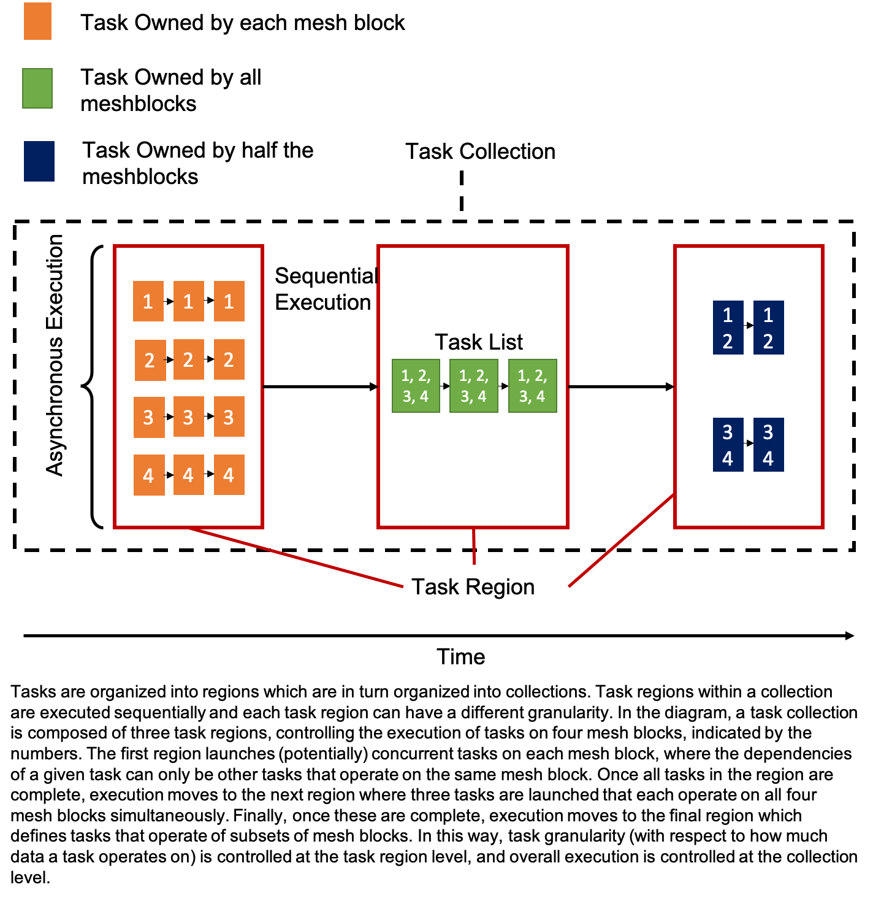

Tasks
Parthenon’s tasking infrastructure is how downstream applications describe
and execute their work. Tasks are organized into a hierarchy of objects.
TaskCollections have one or more TaskRegions, TaskRegions have
one or more TaskLists, and TaskLists can have one or more sublists
(that are themselves TaskLists).
Task
Though downstream codes never have to interact with the Task object directly,
it’s useful to describe nonetheless. A Task object is essentially a functor
that stores the necessary data to invoke a downstream code’s functions with
the desired arguments. Importantly, however, it also stores information that
relates itself to other tasks, namely the tasks that must be complete before
it should execute and the tasks that may be available to run after it completes.
In other words, Tasks are nodes in a directed (possibly cyclic) graph, and
include the edges that connect to it and emerge from it.
TaskList
The TaskList class stores a vector of all the tasks and sublists (a nested
TaskList) added to it. Additionally, it stores various bookkeeping
information that facilitate more advanced features described below. Adding
tasks and sublists are the only way to interact with TaskList objects.
The basic call to AddTask takes the task’s dependencies, the function to be
executed, and the arguments to the function as its arguments. AddTask returns
a TaskID object that can be used in subsequent calls to AddTask as a
dependency either on its own or combined with other TaskID``s via the ``|
operator. Use of the | operator is historical and perhaps a bit misleading as
it really acts as a logical and – that is, all tasks combined with | must be
complete before the dependencies are satisfied. An overload of AddTask takes
a TaskQualifier object as the first argument which specifies certain special,
non-default behaviors. These will be described below. Note that the default
constructor of TaskID produces a special object that when passed into
AddTask signifies that the task has no dependencies.
The AddSublist function adds a nested TaskList to the TaskList on
which its called. The principle use case for this is to add iterative cycles
to the graph, allowing one to execute a series of tasks repeatedly until some
criteria are satisfied. The call takes as arguments the dependencies (via
TaskID``s combined with ``|) that must be complete before the sublist
exectues and a std::pair<int, int> specifying the minimum
and maximum number of times the sublist should execute. Passing something like
{min_iters, max_iters} as the second argument should suffice, with {1, 1}
leading to a sublist that never cycles. AddSublist
returns a std::pair<TaskList&, TaskID> which is conveniently accessed via
a structured binding, e.g.
TaskID none;
auto [child_list, child_list_id] = parent_list.AddSublist(dependencies, {1,3});
auto task_id = child_list.AddTask(none, SomeFunction, arg1, arg2);
In the above example, passing none as the dependency for the task added to
child_list does not imply that this task can execute at any time since
child_list itself has dependencies that must be satisfied before any of its
tasks can be invoked.
TaskRegion
Under the hood, a TaskRegion is a directed, possibly cyclic graph. The graph
is built up incrementally as tasks are added to the TaskLists within the
TaskRegion, and it’s construction is completed upon the first time it’s
executed. TaskRegions can have one or more TaskLists. The primary reason
for this is to allow flexibility in how work is broken up into tasks (and
eventually kernels). A region with many lists will produce many small
tasks/kernels, but may expose more asynchrony (e.g. MPI communication). A region
with fewer lists will produce more work per kernel (which may be good for GPUs,
for example), but may limit asynchrony. Typically, each list is tied to a unique
partition of the mesh blocks owned by a rank. TaskRegion only provides a few
public facing functions:
- TaskListStatus Execute(ThreadPool &pool): TaskRegions can be executed, requiring a
ThreadPool be provided by the caller. In practice, Execute is usually
called from the Execute member function of TaskCollection.
- TaskList& operator[](const int i): return a reference to the ith
TaskList in the region.
- size_t size(): return the number of TaskLists in the region.
TaskCollection
A TaskCollection contains a
std::vector<TaskRegion>, i.e. an ordered list of TaskRegions.
Importantly, each TaskRegion will be executed to completion before
subsequent TaskRegions, introducing a notion of sequential
execution and enabling flexibility in task granularity. For example, the
following code fragment uses the TaskCollection and TaskRegion
abstractions to express work that can be done asynchronously across
blocks, followed by a bulk synchronous task involving all blocks, and
finally another round of asynchronous work.
TaskCollection tc;
TaskRegion &tr1 = tc.AddRegion(nmb);
for (int i = 0; i < nmb; i++) {
auto task_id = tr1[i].AddTask(dep, foo, args, blocks[i]);
}
{
TaskRegion &tr2 = tc.AddRegion(1);
auto sync_task = tr2[0].AddTask(dep, bar, args, blocks);
}
TaskRegion &tr3 = tc.AddRegion(nmb);
for (int i = 0; i < nmb; i++) {
auto task_id = tr3[i].AddTask(dep, foo, args, blocks[i]);
}
A diagram illustrating the relationship between these different classes is shown below.

TaskCollection provides a few
public-facing functions:
- TaskRegion& AddRegion(const int num_lists): Add and return a reference to
a new TaskRegion with the specified number of TaskList``s.
- ``TaskListStatus Execute(ThreadPool &pool): Execute all regions in the
collection. Regions are executed completely, in the order they were added,
before moving on to the next region. Task execution will take advantage of
the provided ThreadPool to (possibly) execute tasks across TaskList``s
in each region concurrently.
- ``TaskListStatus Execute(): Same as above, but execution will use an
internally generated ThreadPool with a single thread.
NOTE: Work remains to make the rest of
Parthenon thread-safe, so it is currently required to use a ThreadPool
with one thread.
Mesh data and Packing over collections of meshblocks
The most common way to interact with collections of mesh blocks is the
MeshData type, which collects MeshBlockData across a collection
of blocks. It is through MeshData that sparse packs can be built,
and multiple integrator stages, e.g., for a Runge-Kutte integrator,
may be exposed.
When building a set of task lists over a collection of mesh blocks, you may choose the number of blocks per task list by hand, but defaults can be set at runtime in one of two ways. The run time parameter
<parthenon/mesh>
pack_size = 1
specifies the number of blocks per pack. For example, a value of 1 indicates that each task list, even in synchronous regions, is over only 1 block. A value of -1 indicates it is all blocks per rank. You may choose -1 or any positive finite value.
Alternatively, you may set
<parthenon/mesh>
packs_per_rank = 1
which specifies the number of packs on a given rank. A value of 1 indicates each task list contains all blocks on a given rank. A value of 2 indicates each list contains half, etc.
If both of these parameters are set, then pack_size takes
precedent. If neither are set, the default is pack_size=-1, which
is equivalent to packs_per_rank=1.
In a task list, you may access this information as, for example,
const int num_partitions = pmesh->DefaultNumPartitions();
which will be equal to the pack size. Parthenon can automatically
partition your list of meshblocks into smaller block lists and wrap it
in a MeshData object with the GetOrAdd method. For example:
TaskRegion &tr = tc.AddRegion(num_partitions);
for (int i = 0; i < num_partitions; ++i) {
auto &tl = tr[i];
// mbase now points to the ith partition of the full block list
// and is the equivalent of the ``MeshData`` object named "base"
auto &mbase = pmesh->mesh_data.GetOrAdd("base", i);
}
and GetOrAdd may be used on any “complete” MeshData object
you’ve created on the entire block list.
TaskQualifier
TaskQualifier s provide a mechanism for downstream codes to alter the default
behavior of specific tasks in certain ways. The qualifiers are described below:
- TaskQualifier::local_sync : Tasks marked with local_sync synchronize across
lists in a region on a given MPI rank. Tasks that depend on a local_sync
marked task gain dependencies from the corresponding task on all lists within
a region. A typical use for this qualifier is to do a rank-local reduction, for
example before initiating a global MPI reduction (which should be done only once
per rank, not once per TaskList). Note that Parthenon links tasks across
lists in the order they are added to each list, i.e. the n``th ``local_sync task
in a list is assumed to be associated with the n``th ``local_sync task in all
lists in the region.
- TaskQualifier::global_sync : Tasks marked with global_sync implicitly have
the same semantics as local_sync, but additionally do a global reduction on the
TaskStatus to determine if/when execution can proceed on to dependent tasks.
- TaskQualifier::completion : Tasks marked with completion can lead to exiting
execution of the owning TaskList. If these tasks return TaskStatus::complete
and the minimum number of iterations of the list have been completed, the remainder
of the task list will be skipped (or the iteration stopped). Returning
TaskList::iterate leads to continued execution/iteration, unless the maximum
number of iterations has been reached.
- TaskQualifier::once_per_region : Tasks with the once_per_region qualifier
will only execute once (per iteration, if relevant) regardless of the number of
TaskList``s in the region. This can be useful when, for example, doing MPI
reductions, printing out some rank-wide state, or calling a ``completion task
that depends on some global condition where all lists would evaluate identical code.
TaskQualifier s can be combined via the | operator and all combinations are
supported. For example, you might mark a task global_sync | completion | once_per_region
if it were a task to determine whether an iteration should continue that depended
on some previously reduced quantity.